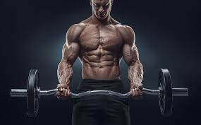

Academia Vem Monstro
Você pode ser muito feio, mas se você treinar
continuará sendo feio, mas será um feio feliz

Musculação > Artes Marciais
Cuide Mais De Você
Equipe: Eric Efrem, Jairo Martins, Mário Aparecido, Mateus Ribeiro e Isael Pereira
Atualizado em 01/Outubro/2018
MUSCULAÇÃO
A musculação é uma modalidade muito conhecida atualmente embasada no fisiculturismo, que traz vários benefícios para o corpo, como, o aumento da força, preparação do coração para esforços mais intensos, entre outros. Seus variados exercícios são praticados por pessoas de todas as idades, onde pode-se atingir diferentes resultados que não dependem apenas da maneira, tipo, ordem, frequência e intensidade dos exercícios, pois, tipo de alimentação, hereditariedade e condicionamento cardiorrespiratório são essenciais.
Malhação
Uma maneira gostosa de trabalhar o corpo.
Recomendações
Para a prática da mesma, é importante que haja acompanhamento médico, executar os exercícios corretamente para que não ocorra rompimento de ossos, músculos ou ligamentos, dores na coluna e desvio de postura, alongar antes e depois de malhar. Em adolescentes a musculação pode prejudicar o crescimento.
Para melhores resultados, é recomendável realizar treinos de menor intensidade, pois, o pico de somatotrópica (hormônio do crescimento), acontece a partir dos 45 minutos de treino, se passar de uma hora, há uma queda hormonal e o corpo entra em estado de fadiga, que, por consequência produz cortisol e gera catabolismo, que é uma condição indesejável para quem quer ganhar massa muscular, já que ocasiona o desgaste excessivo da musculatura. Portanto, estruturação de uma rotina de exercícios equilibrada e o estabelecimento de períodos de descanso são fatores determinantes para o progresso.